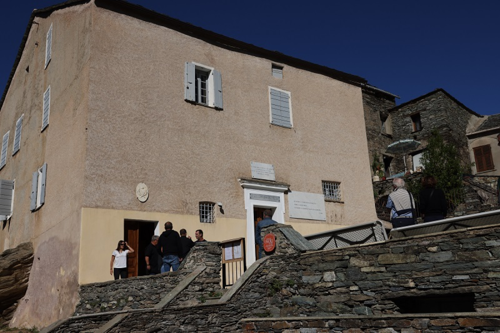

Morosaglia magasan fekvő, büszke kőházai között található az az épület, amely örökre beírta magát a világtörténelembe. Itt született 1725-ben Pasquale Paoli, akit a korzikaiak a mai napig csak úgy neveznek: „U Babbu di a Patria", azaz a Nemzet Atyja. Paoli nem csupán egy katonai vezető volt, hanem egy zseniális államférfi, aki megalkotta a világ első modern, felvilágosult alkotmányát, bevezette a női szavazati jogot, egyetemet alapított, és mintaszerű demokratikus köztársasággá formálta az elnyomott Korzikát. Szülőháza így nem egy egyszerű kiállítótér, hanem a modern demokrácia és a szabadságvágy egyetemes szimbóluma.
A történelmi kőfalak mögött berendezett múzeum mély és megrázó időutazást kínál a látogatóknak. A szobákban testközelből ismerhetjük meg Paoli életútját, a genovaiak és a franciák elleni küzdelmeit, valamint a londoni száműzetésének éveit. A kiállított tárgyak között megtalálhatók a korabeli fegyverek, a szabadságharcok dokumentumai, Paoli személyes levelezései, bútorai, valamint olyan ritka relikviák és portrék, amelyek hűen bemutatják, miért tisztelték őt a kor legnagyobb elméi, köztük Jean-Jacques Rousseau és Voltaire is, mint a felvilágosodás gyakorlati megvalósítóját.
A múzeumlátogatás legmeghatóbb és legünnepélyesebb pontja az épület földszintjén található családi kápolna. Pasquale Paoli 1807-ben, Londonban halt meg száműzetésben, és hamvait kezdetben a Westminster Apátság közelében temették el. A korzikai nép azonban soha nem feledte el vezérét: a 19. század végén, 1889-ben ünnepélyes keretek között hazahozták földi maradványait Angliából, és ebben a szülőházi kápolnában helyezték örök nyugalomra. A sírnál állva, a csendes hegyvidéki környezetben válik teljessé a zarándoklat, ahol a látogató átérezheti a korzikai lélek elszakíthatatlan kötelékeit és a szabadság halhatatlan szellemét.